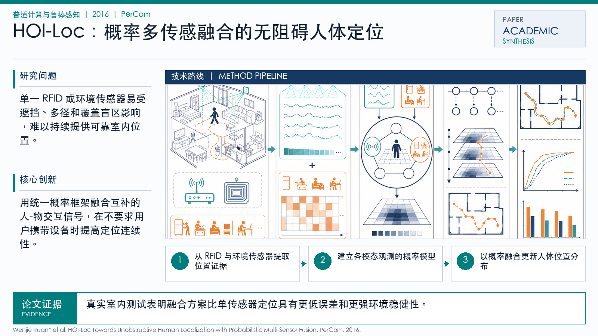

Problem
解决的问题
单一 RFID 或环境传感器易受遮挡、多径和覆盖盲区影响，难以持续提供可靠室内位置。
Pervasive Computing and Robust Sensing · 2016 · PerCom
HOI-Loc Towards Unobstructive Human Localization with Probabilistic Multi-Sensor Fusion
Problem
单一 RFID 或环境传感器易受遮挡、多径和覆盖盲区影响，难以持续提供可靠室内位置。
Value
真实室内测试表明融合方案比单传感器定位具有更低误差和更强环境稳健性。
Paper-grounded Academic Summary
该代表页依据原文摘要、贡献段与方法图注生成。方法视觉由 ImageGen 按论文证据逐篇绘制，中文研究问题、技术路线、创新点与实验结论采用确定性排版，以保证内容与字符准确。
打开原文 PDF
Technical Route
Innovation